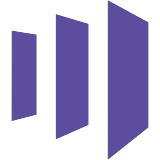

Leads fall between  HubSpot and
HubSpot and  Salesforce.
Salesforce.
Nova catches them.
The big calls stay yours.
Go on, break something.
NovaAPP3 look like duplicates. Merge?
Nova
NovaAPPWant to try this on your own sync?
HubSpot and Salesforce.HubSpot
Salesforce
 ZoomInfo
ZoomInfo Gong
Gong
Marketo7-day free trial. Setup guide